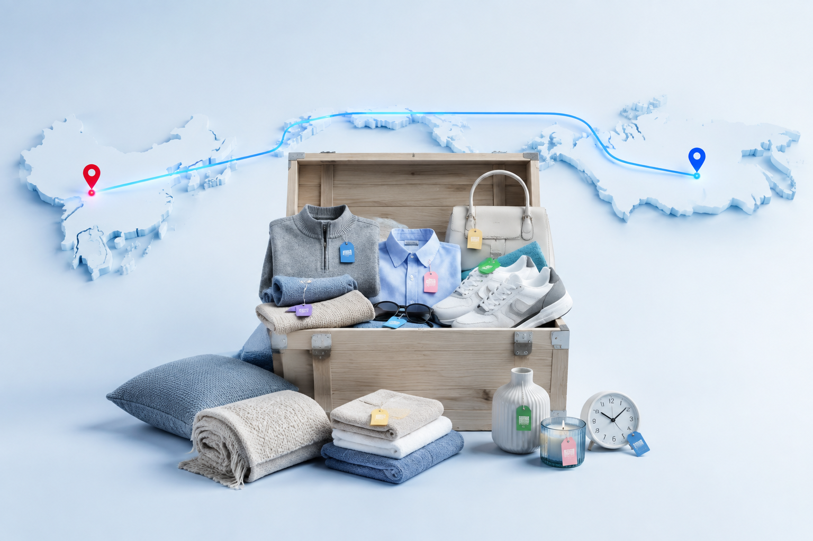

Доставка из Китая: выбираем вещи и заказываем вместе
Помогаю найти одежду, обувь, аксессуары и товары для дома по фотографии, описанию или ссылке. Проверяю варианты, рассчитываю каждую позицию и объединяю подтверждённые покупки участников.
Помогаю найти одежду, обувь, аксессуары и товары для дома по фотографии, описанию или ссылке. Проверяю варианты, рассчитываю каждую позицию и объединяю подтверждённые покупки участников.

Каждая позиция рассчитывается отдельно и объединяется с другими покупками после подтверждения.| Доставка | 18–28 дней | Китай → Москва | $3,4 / кг | Сопровождение | 10% | Первый расчёт | Бесплатно |
|---|
Шесть понятных этапов от первого сообщения до получения вещи.
Основные категории совместных покупок. Нестандартный товар сначала проверяется отдельно.
| ОдеждаФутболки · худи · платья · штаны · джинсы · куртки · зимние вещи | ОбувьКроссовки · ботинки · туфли · сандалии · домашняя обувь | АксессуарыСумки · рюкзаки · очки · ремни · кошельки · украшения | Для домаШторы · текстиль · посуда · органайзеры · светильники · декор |
Без единой средней цены: каждый товар рассчитывается по своим параметрам.
| Этап | Что учитывается | Как считается |
|---|---|---|
| Стоимость товара | Цена выбранного варианта | По курсу выкупа |
| Китай → Москва | $3,4 за килограмм | По весу и объёму |
| Выкуп | Индивидуальные расходы | По конкретной позиции |
| Сопровождение | Проверка и организация | 10% от товара |
| Москва → ваш город | Тариф перевозчика | По весу и расстоянию |
| Первый расчёт и помощь с поиском — бесплатно | ||
«Для Своих» — небольшой проект, где каждую покупку сопровождают лично.
Можно прислать фотографию, описание или готовую ссылку. Я найду и сравню подходящие варианты, проверю доступную информацию о продавце, помогу со сверкой размера и объясню расчёт.
Согласование проходит в Telegram или ВК, поэтому выбранные параметры и вся переписка остаются в одном месте.
Условия совместной покупки →Ответы на вопросы новых участников до заказа.
| Можно начать без ссылки? | Да. Пришлите фотографию или опишите нужную вещь — я помогу с поиском и сравнением. |
|---|---|
| Сколько занимает доставка? | 18–28 дней от отправки со склада в Китае до Москвы, затем обычно 2–5 дней до города. |
| Когда известна цена? | Предварительный индивидуальный расчёт сообщается до подтверждения и выкупа. |
| Первый расчёт платный? | Нет. Для нового покупателя расчёт и помощь с подбором выполняются бесплатно. |